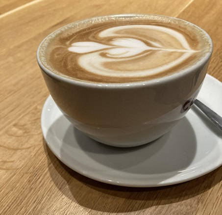

Sprinting through January
Some hangovers from last year, it feels like unfinished business… or reopening a can of worms.
January is always peek health guilt surge, the gym is busy with new members on a come down from their seasonal glut. I knew this was coming, so foresight lead me to book a tough 10 mile offroad race for this weekend.
I’m not feeling well prepared yet. The weather may well be frosty/wet, puddles of mud will be deep.. but I did hit a 5k PB at a flat park run over the holiday, so I’ve got some base to start from.

As humans we always tend to overcompensate, I’ll cut out all this, and that too, and go vegan, and and… and book a marathon.. A chance to heal? or chance to distract from regrets…
My plan A was to cut back on caffeine, it’s been nearly two weeks (12 days) without any. I’m not sleeping better, feeling healthier, happier or as productive. Probably my sugar and chocolate intake has doubled… after scoffing the whole packet, I found out the dried Blueberries and Cranberries were 70% sugar!
We tend to find new solutions to age old problems… for our underlying need… energy to keep going!
So it’s Jan 12th and here’s to giving up, giving up. It’s 2024 and the plan is to do change in moderation, changing gradually. Going cold turkey sucks and is too extreme - so it rarely stick.

If I had some new personal goals for 2024 it would:
- sustainability - do more for the environment,
- community - continue to be involved in important local groups,
- wellbeing - more time for contemplation, less caffeine, holidays, and good times with friends and family,
- fitness - hit 1 mile swim and 20km run per week (average)… more hikes, climbs,
- accountability - setting some smarter goals and tracking progress,
Now sustainability… let’s be realistic - I do drive a diesel car and probably won’t be e-friendly any time soon, but in 2023 I did get the bus or train to work every time and never once drove/parked in Leeds. Considered my commute is horrendously slow, this is some feat. The reflection time, satisfying and 1 mile walk to the bus plus 1 mile walk from bus station was a helpful step-boost too.
It is annoying to me that no one on buses speaks to each other these days - that could be a good side-mission - how get people talking to each other again ? what is a good opening line?
What a first week back in…
It was a real shock to the system, huge email backlog, urgent data to anaylse and reports to prepare, in person training and research.
An incident right off the bat Monday morning disrupted my whole week. I’m proud of how our colleagues leant in to understand what happened, stop an issue, put in place better safeguards to hopefully stop this happening again.
It was a reminder that while many teams are required to continually work at pace, we need the confidence to push back if speed is starting to compromise quality and introduce risks. It also highlighted the need for clearer governance, roles and responsibilities, and UCD leadership where multiple teams are working in an overlapping domain.
Ethical practices, such as information governance have always been principle that reseachers subscribe too. However working too fast continually is unethical. It creates holes in processes, onboarding, offboarding, documentation, training, quality assurance… it only takes a little stone to cause big ripples…
On the positive side of things, we had the NHS App team in the research lab, exploring offline health journeys and experiences. 10/10 participants turned up - yay! From an UCD Ops perspective things went pretty smoothly too. Minor issues with tv remotes, printing, camera controls… but everything else fine and uneventful - brilliant work by the App team.
The research lab is getting busy now too. We’re at 60% utilisation over next 4 weeks. We’ve had requests from other health departments to visit too and book/borrow our lab - we’re always happy to accommodate!
It was great to observe some live research and learn about how a participants mental model of healthcare compared to other services such as banking. This started some interesting discussions about how we document findings about more universal usability behaviours and heuristics, beyond the typical product-feature level findings.
This week also the user research repository project has entered Beta stage. The “Find User Research” tool is being tested with teams starting to upload their documents and for the UCD Ops team to quality check the content. There is another (not) small task ahead to migrate the tool into NHS infrastructure… which as you imagine… has an amazing number of hoops that need to be jumped through.
Next week:
- Recovery after offroad running
- Knowledge Management Working Group - focus on quality controls
- Onboarding contractors
- Roadmap plan and backlog review
- UR Lab - 2 or 3 days in office